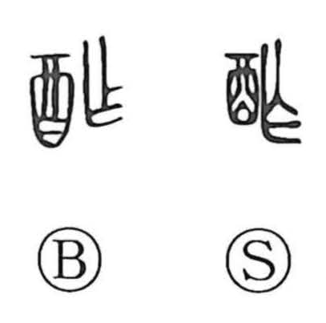

酢

Kun: su | On: saku
vinegar ・ to return a toast ・ to repay
Explanation
酢 is a phono-semantic character formed with 酉, the wine jar, signaling the realm of drink and fermentation, and 乍 as the phonetic, giving the sound saku. In early usage it did not chiefly mean vinegar: in ceremonial drinking it named the answering cup—the guest’s return of the host’s toast, hence the sense “to repay.” The Book of Odes (Major Odes, Xing Wei) records 或献或酢, “now one offers, now the other returns,” vividly describing this exchange. From this notion of reciprocating in the toasting rite, the graph later came to denote the soured liquid itself, thus ‘vinegar.’